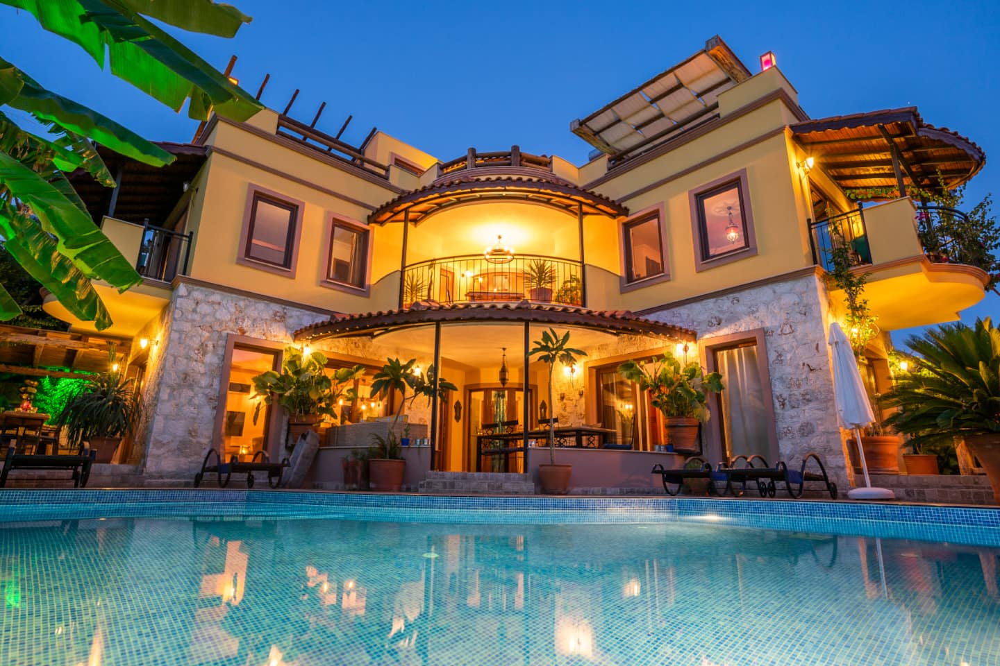

0118 сентября
Первый вечер на вилле
- Встреча в аэропорту — трансфер на виллу
- Заселение и время, чтобы выдохнуть после дороги
- Знакомство с организаторами и остальными участницами
- Приветственный ужин на террасе, среди свечей и первых разговоров
- Небольшой подарок каждой участнице
- Вечер без программы — для тех, кто хочет остаться и поговорить дольше
